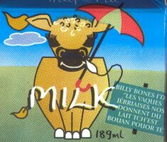
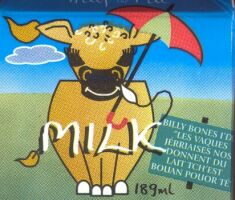
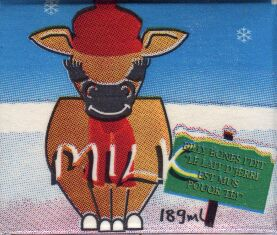
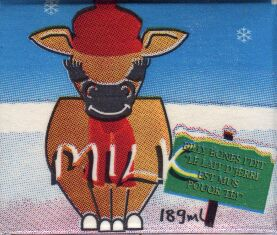

Au mais d'Mai 2000, les mousses dans l's êcoles trouvîtent tchiquechose d'nouvé sus lus cartons d'lait. Lé Lait d'Jèrri (Jersey Milk) avait înmprînmé des nouvieaux cartons auve un message en Jèrriais:
Bill Bones i'dit: Bévez lé lait dé Jèrri pouor souongni vôtre santé
Ch'est bouan pouor dithe ès mousses qué lé lait dé Jèrri est l'miyeur du monde et qu'est înmportant d'baithe lé lait à seule fîn qu'les mousses saient grands et forts. Un vièr diton nos dit qu'i' vaut mus payi l'boulandgi qué l'docteu. Ach'teu nou peut dithe étout qu'i' vaut mus payi l'laitchi étout!
Au S'tembre lé slogan est: Billy Bones i' dit “ Les vaques Jèrriaises nos donnent du lait tch'est bouan pouor té”
 
Et en Hivé j'avons chu slogan: Billy Bones i' dit “ Lé lait d'Jèrri est mus pouor té!”
 

Viyiz étout: